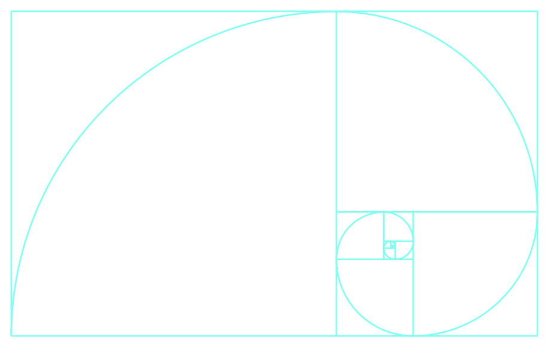
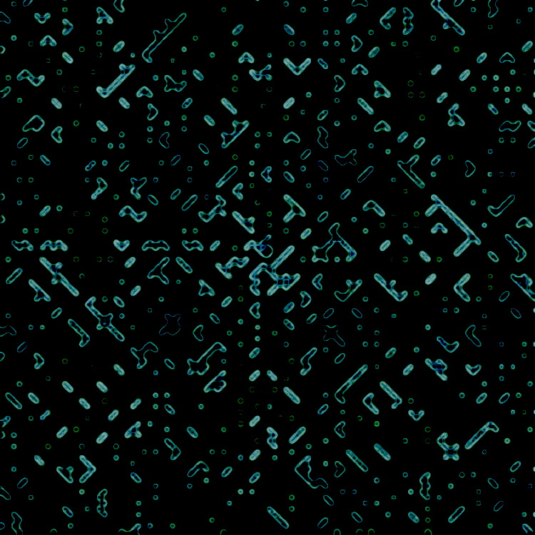

Building a JavaScript
Ulam spiral
Contents
- Truly, untameably wild?
- Building the grid
- Prime checker function
- Three questions
- Traversing the grid
- Colouring in the primes
- Moving in a spiral
- Three answers
- The whole shebang
- What next?
Truly, untameably wild?
Prime numbers (those that are divisible by only themselves and one) are mathematically wild. Unlike, say, the even numbers, the primes famously elude the capture and discipline of a neat mathematical formula. Compare: For any given even number, we have a tidy formula from which we can tell where we’ll find the next even number, it’s just n + 2.
Not so for the primes. Take your favourite prime number. Maybe it’s 3, or 17, or even 65537. There is currently no known generalisable mathematical statement from which we can deduce how far up the sequence of the natural (whole) numbers the next prime lies.
So, are the primes scattered at random throughout the sequence of natural numbers? Not exactly. Some formulas generate significantly many primes for us to conclude that order and predictability pervade at least some subsets of the primes. But a formula that captures them all, whilst also being efficiently computable is not known (and we'll have a few things to say about efficient computability later on...).
There is, however, a little conjuring trick we can perform to unveil a series of sequences and patters that dwell amongst the primes, sequences which even our best prime formulas cannot wholly explain. What's more, we can do it using just coloured pencils and graph paper!
In principle, at least. For whilst this conjuring trick is easy, it certainly is repetitive. Here’s the deal. Put your pencil in the middle of your graph paper and write a “1”. Go up one square and write “2”. Go left and write “3”. Keep going, inputting the next number to the next square, working in a tight spiral around 1 until you have something that looks like this:
Now, go around again, but this time, every time you find a prime number, colour in that square. If you have the patience to do this for all of the cells in, say, a 100 x 100 grid, you will witness the emergence of a haunting and beautiful pattern, in which many of the prime numbers – far more than would be expected by chance, and far more than for a number series that is truly, untameably wild – line up in long diagonal stretches that criss-cross the page.
Alas, dear reader. I do not have this patience. But, I have always had a deep desire to generate for myself the mysterious Ulam spiral (first discovered by mathematician Stanisław Ulam in 1963, and popularized by Martin Gardner) in some way. The precise way became clear last year as I started learning programming: I could get my computer to do the colouring in bit for me.
There are three stages to the project:
- Create a grid of squares, where we have control over the colour of the squares.
- Write a bit of code that can identify if a number is prime.
- Write a bit of code that specifies the spiralling movement across the grid.
We're going to take a pretty rigorous walk through the code over the next few sections. But because I am assuming that you, dear reader, are a human, and not the JavaScript engine, we'll be doing this in stages, following a narrative that does not precisely match the order of the code itself from top to bottom. So if you want to take a look at the complete code repository, you can find that here. For the main JavaScript algorithms, have a look at the scripts/ulam.js file in the code repository. There's also this this reproduction of those algorithms.
Let's get started!
Building the grid
I’ve chosen to go with a 100 x 100 grid, which means we need to create 10,000 grid squares. We’ll be using the HTML equivalent of a square, an element called a span.
Here's one now, look:
We can then use the styling language CSS to tell these spans how big and what colour to be. So, from now on I’ll talk about “spans” – just think of them as squares that we can display on a webpage.
We want each span to be pretty much identical except for whether or not they are coloured in. So, here’s our first job for JavaScript, the programming language we’ll be using to get the main logic into the project. Let’s first declare some variables – words that will store the values of important data that we’ll want to reuse in the project. We said that the grid would be 100 spans wide/high, so we’ll store that value in a gridLength variable, which we can multiply by itself to get the total number of spans in the grid (gridSize), which will also be an important value to keep track of for later. Let's head on over to the main JavaScript file (which is scripts/ulam.js in the code repo linked above) and make lots of spans!
- let gridLength = 100;
- let gridSize = gridLength * gridLength;
- let spanArray = [];
- for (let i = 0; i < gridSize; i += 1) {
- span = d.createElement("span");
- spanArray.push(span);
- }
The main “making” action happens on line 4, the line that starts with the word “for”, up to line 7. We have here a fundamental computing procedure: a loop (in this case, a “for loop”), which allows us to perform some given operation over and over again, until some condition is met. The operations running inside this loop (lines 5 and 6) are almost interpretable in English. They basically say: create a span, and then put that span inside a thing we’re calling spanArray.
An array is a way to store data. It’s a container where we can keep the spans together, and then access them all at once later on. Line 4 is the bit that specifies how many spans we should make: start a count at 0, and then make a span, and every time we make a span, plus one to this count. Repeat this procedure over and over, stopping when the count reaches the number stored in the variable gridSize, which in this case is 10,000.
We now have 10,000 spans, stored in a list and ready to go. That was quick! We still need to do a bit of styling to get things looking grid-like. For one thing, we need to actually put them on our page, but we’ll do that right at the end when we’ve done the prime number bit.
At present, these spans won’t have any dimensions or colour. We'll need to change that if we actually want to see them on our page. We'll do this in our CSS file, styles/ulam-main.css if you're following the repo. Let’s first make a container to house our spans once they get to the page. We'll give it a width and a height that is a multiple of our chosen gridLength.
.main-grid {
width: 600px;
height: 600px;
}
Then, we set each span element to be container size / gridLength pixels high and wide. By default, the spans want to stack on top of each other, in a long line vertically down the page. float: left tells them to fill the first row, sitting next to each other like words on a page until they reach the edge of the grid, and then fill the next row… and so on. We’ll also give them a nice minty colour so we can see them.
.main-grid span {
height: 6px;
width: 6px;
float: left;
background-color: rgb(200, 249, 232);
}
We still won't see anything just yet. That's because we haven't yet sent the spans we made in the JavaScript file onto the HTML page. We'll do that once we've worked out which spans need to be prime.
The final bit of CSS set up is to define the additional class that will allow our prime spans to show up in the grid. All we need to do is give them a different background colour. Let's use a dark green:
.main-grid .prime {
background-color: rgb(4, 56, 57);
}
Now let's find some primes!
Prime checker function
Before we tell JavaScript to get out its colouring pencils and go to town on our grid, we need a way to work out, for any given number: is that number prime? I’m going to do this with a function, a reusable bit of code that allows us ask that same question, but feed in any number of different values (which is useful, because there are quite a lot of numbers out there…). Here it is:
- let prime = num => {
- let isPrime = true;
- if (num <= 1) {
- isPrime = false;
- } else {
- for (i = 2; i <= (num / 2); i += 1) {
- if (num % i === 0) {
- isPrime = false;
- }
- }
- }
- return isPrime;
- }
Here’s how it works in essence: By default, say that the number that we feed in (call this the “target” number) is a prime. Give that answer back – unless the target number is found to be divisible by some other number – then confirm it’s not a prime.
For loops are back, this time allowing us to check all the possible factors between 2 and half of the target number - because the lowest number that could be a factor that we are interested in is 2, and the highest one we need to check is half the target number – you can’t have a factor that’s bigger than half the target, so let’s not bother checking those.
After line 6 sets up this loop for us, line 7 does the mathsy bit. This line basically asks “if you divide the target number by the (possible) factor we’re currently checking, do you get a remainder of zero?”.
Note that JavaScript doesn’t read % as “percent”. In fact, it’s a modulus operator, and will give you the remainder from a division operation. We use it here because, if you can divide the target number by another (greater than 1) number and there’s no remainder, then the target number isn’t prime.
If this is the case, we can move onto the next line, which is the line that ensures our function will now return the answer: false. However, if we loop through all the possible factors with line 6, and never find the condition on line 7 to be true, that means we’ve found a prime, and the function will return the answer true.
You use the prime function by “calling” it, and passing in the number you want to know about. Here's some function calls and expected returns:
> prime(9);
false
> prime(13);
true
We can also pass in some pretty big numbers:
> prime(479001599);
true
> prime(389472933);
false
Unfortunately my computer doesn’t have enough memory to check the likes of such illustrious primes as 393050634124102232869567034555427371542904833 (yes that really is a prime) or 11111111111111111111111 (same) with my prime function, but if it did, in principle, my function should be able to give us an answer.
With our prime function working, let’s work out how to make a spiral!
Three questions
Picture a print head that starts on the center span, and which moves in a spiral over the grid, colouring in spans that represent prime numbers. We’re not really going to program a print head, it’s just a useful metaphor for thinking about the problem. This metaphorical print head has three questions for us:
- How do I check if the current span is prime, and colour it in if so?
- How do I move to a neighbouring span?
- How do I change direction when a corner of the spiral is reached?
Let’s start answering those questions.
Traversing the grid
Remember that the spans will be laid out in the grid like words on a page – left to right, starting from the top. As we pushed them into an array, we can access them via their indexes. We can get the index of the span that will end up in the centre of the grid to start our spiral with the following:
let currentIndex = (gridSize / 2) + (gridLength / 2);
That’s basically JavaScript for “go half way down, and half way across, and call that position the current index”. Then, to effectively “move” one cell to the right, we plus 1 to the current index. To move one left, we minus 1. Vertical movement is just like skipping a whole line - to move one down, we skip forward by as many cells as the grid is wide, and to move up, we skip backwards by that same number.
You can see this with the 10 x 10 grid below. The print head moves around the indexes of the spans, which I’ve written into the below grid. If it’s currently at the span with an index of 55, then it can move one square to the right by moving to the span with an index of 55 + 1. Move left with 55 - 1. To move one square up from 55, we minus the total grid length (which in this case is 10) thus moving onto the span with the index of 45. Move down with 55 + the total grid length, thus moving to 65.
You might notice that the first span has an index of 0. We also started at 0 in our first for loop. Why? Computers generally count things starting at 0, it means common mathematical operations use less memory, which was important in the early days of computing when memory was scarce. These days, for the sort of computing I’ve been doing, at least, there’s more than enough memory to go around to start counting at 1, but optimisation considerations are still important for larger or more numerous sets of operations, and so the 0 indexing tradition has continued, at least in the C based programming languages – the family of languages to which JavaScript belongs.
Back to the grid. We can move around the grid by making modifications to the current index with:
let right = 1;
let left = -1;
let down = +gridLength;
let up = - gridLength;
let directions = [up, left, down, right];
We’ll want to use these directional values at predictable points in the spiralling algorithm, so we store them in an array for easy access when it comes to that.
Colouring in the primes
We want to check every span in the grid, colouring it in if it is prime. As we’re checking a series of things again (in this case, span elements that we pushed into an array) we can do this with a for loop, which we will tell to run as many times as there are spans in the grid – gridSize many times:
for (let i = 1; i <= gridSize; i += 1) {
We can now call upon our prime checker function that we defined above inside this new for loop:
if (prime(i)) {
spanArray[currentIndex].classList.add("prime");
}
This is “function composition”, where we write discrete bits of code that perform distinct operations so that they are reusable in larger, more complex functions. It makes it a bit easier for us keep track of what we’re doing inside the current algorithm if we’re not also trying to parse the prime function at the same time.
The body of the above condition basically says: apply the style class "prime" to that span - remember setting this class up in our CSS file above? It’s not a lot of styling, and we could have handled it here in the JavaScript file, but in general, it’s good keep styling concerns separate from logic concerns, even if the code is minimal. If anyone wanted to update the overall colour scheme of the spiral (…I’m not a designer, so no offense taken!) they don’t really want to have to pick through the JavaScript algorithms to do that.
Having checked the first span, we then want to move to the next one. We can do this by re-assigning the value of the currentIndex. How? We're going to make use of another variable that we'll call currentDirection. currentDirection is always going to be a number that corresponds to one of the elements in our directions array. We'll see how that works in the next section.
We also want to decrement the value of something called stepsRemaining.
currentIndex += directions[currentDirection];
stepsRemaining -= 1;
stepsRemaining until what? That does sound a bit ominous.
But it’s not. It’s all to do with how we spiral…
Moving in a spiral
To move in a spiral, the print head will set out in one direction, and check some number of spans before making a 90 degree turn anticlockwise. Then, it will check another series of spans, before turning again, and so on…
To work out how to write a spiralling algorithm, we need to figure out the relationship between the natural numbers, and turns of the spiral. Let’s mark out the straight sides of the spiral with different colours – we’ll call these “paths”. Paths get longer as we spiral outwards. Can you see the pattern that holds between the sequence of natural numbers and the length of the paths? (Hint: the colours might help…)
Perhaps you spotted that the paths increase in length by one span on every other turn of the spiral. In other words, every other time the print head traverses one of these paths and turns 90 degrees anti-clockwise, the length of the next two paths increases by 1. That’s quite a straight forward relationship.
We now need a way to take note of the number of spans left to check on the current path before the print head should turn, and a way to keep note of the current path length. We’ll do the former with that (not so) ominous variable stepsRemaining, and the latter with another variable, pathsTraversed.
When stepsRemaining is 0…
A lot of the action happens when stepsRemaining is 0 – or, in other words, when the print head is at the end of a path, and at a corner of the spiral. At this point, we need to do a number of things. Firstly, we need to increase the number of paths traversed (important to keep track of so we can increase the path length every other time this happens).
if (stepsRemaining === 0) {
pathsTraversed += 1;
Secondly, we need to check if this is indeed one of those times that the path length should increase. The below if condition checks if pathsTraversed is an odd number – which it will be every other time we traverse a path. If this is so, pathLength goes up by 1. Note: the % in the if condition is another modulus operator .
if (pathsTraversed % 2 === 1) {
pathLength += 1;
Finally, we need to change direction. We can do that by cycling through the directions array and setting currentDirection to represent the index of the next element along in the directions array.
currentDirection = (currentDirection + 1) % 4;
stepsRemaining = pathLength;
Another modulo! This one just lets us go back to the first index of the directions array once we reach the end, just what we want for repeated spiralling turns. At this point, we also reset stepsRemaining so that it’s equal to the path length we incremented earlier, making it ready for the next run of the for loop and the next side of the spiral.
When stepsRemaining isn't 0…
What about if stepsRemaining isn’t 0 – either because we never entered the above if condition which checks for when it is – or because we’ve just finished going through that if condition, and stepsRemaining has been reset to the pathLength?
Well, if this is the case, then we’re all finished checking the prime-i-ness of the span; working out where we are along the current path, and when we want to turn, so the only thing left to do is to move on to the next span, so we can start over. We do this by updating the value of currentIndex so that it’s equal to one more step in whatever direction we are currently going.
currentIndex += directions[currentDirection];
stepsRemaining -= 1;
What next? Back for several thousand more goes through the whole for loop that we began at the start of the Colouring in the primes section, probably, repeating all of the above, until all spans have been checked and either coloured in or passed over.
Sending it all into the DOM
There's one final piece to the puzzle, and that's rendering the spiral on the webpage. Our work in the JavaScript file has been to essentially work through the spanArray (the list of spans), applying a style class to spans that represent primes in the spiral layout. It feels more complex than that because we haven't been working through the spans in the order in which they appear in the list, but in the order that a spiralling print head would traverse over them were they to be layed out in a grid already.
But now that this list is appropriately styled, we can render it in the standard order, from lowest to highest index. This means we can use a straight-forward for loop to append the spans to the mainGrid container (this is the container we styled in CSS with our required dimensions and colours earlier).
let fragment = d.createDocumentFragment();
for (let i = 0; i < spanArray.length; i += 1) {
fragment.append(spanArray[i]);
}
mainGrid.append(fragment);
We avoid rendering each span to the page individually as the final step in the for loop which handles the spiral. We instead append the spans to a temporary container, called a document fragment, which we can use to populate the grid on the page in one go. This is because it's expensive in terms of processing resource to interact with the Document Object Model, or "DOM" (the data structure to which the browser refers to render a webpage), and so it's preferable to do this just once, rather than 10,000 times.
Three answers
We can now give the humble print head its answers:
- How do I check if the current span is prime, and colour it in if so?
- Call the prime function, apply a class, and let CSS handle the styling.
- How do I move to a neighbouring span?
- Reassign the value of the index of the span you’re currently at using the values defined in the directions array.
- How do I change direction when a corner of the spiral is reached?
- Keep track of how many spans there are left to check on the current path, and when you get to the end, use the next value in the directions array. Oh, and if you are on an odd numbered path, add one more step to the next two paths you traverse so that the spiral can grow.
And that’s it – that’s the Ulam spiral!
The whole shebang
Here's the JavaScript code in full from the scripts/ulam.js file:
(d => {
// Prime function
let prime = num => {
let isPrime = true;
if (num <= 1) {
isPrime = false;
} else {
for (i = 2; i <= (num / 2); i += 1) {
if (num % i === 0) {
isPrime = false;
}
}
}
return isPrime;
}
// Build an array of span elements
let gridLength = 100;
let gridSize = gridLength * gridLength;
let spanArray = [];
for (let i = 0; i < gridSize; i += 1) {
span = d.createElement("span");
spanArray.push(span);
}
// The position of the print head, starting in the center
let currentIndex = (gridSize / 2) + (gridLength / 2);
// Directions: differences in span indexes as the print head moves
let up = -gridLength;
let down = +gridLength;
let right = 1;
let left = -1;
let directions = [up, left, down, right];
// Current direction of travel of the print head
let currentDirection = 0;
// Spans left to check before turning
let stepsRemaining = 1;
// A path is the total straight side of the spiral before a turn is made
let pathLength = 1;
// This accounts for tight spiraling at the start of the loop (it should not increment until two directional turns)
let pathsTraversed = -1;
// Step through the natural numbers
for (let i = 1; i <= gridSize; i += 1) {
// If no steps remain, the print head is at the end of a path. Log that with pathsTraversed.
if (stepsRemaining === 0) {
pathsTraversed += 1;
// On paths of an odd number, increase the path length
if (pathsTraversed % 2 === 1) {
pathLength += 1;
}
// Change direction and reset steps remaining
currentDirection = (currentDirection + 1) % 4;
stepsRemaining = pathLength;
}
// Apply the prime style class
if (prime(i)) {
spanArray[currentIndex].classList.add("prime");
}
// Move print head one square in current direction
currentIndex += directions[currentDirection];
stepsRemaining -= 1;
}
// Append span array elements to a fragment, to send back to DOM in one go
let fragment = d.createDocumentFragment();
for (let i = 0; i < spanArray.length; i += 1) {
fragment.append(spanArray[i]);
}
mainGrid.append(fragment);
})(document);
What next?
Optimisation, reusability, interactivity...
If JavaScript is doing the hard work for us, why stop at a 100 X 100 grid? Why not fill the whole page?
Here's how we set things up: before we ask for the grid to be rendered in the browser, we’re calling that prime function for each number up to 10,000. Remember that the prime function itself checks every possible factor of each number passed to it. That means that by the time we get to prime spans on the outermost paths of the spiral, JavaScript is checking close to 50,000 possible factors before colouring each one in.
That’s a lot of calculations! And yet, for a 100 x 100 grid, the whole thing can still be done in a fraction of a second. But the relationship between the grid size and the total number of possible factors that must be checked across the grid is not linear, the latter increases at a much higher rate than the former. This bears out experimentally: A 150 x 150 grid using my current methodology takes a few seconds to fully render. I haven’t had the patience to hang around for long enough to see whether a 200 x 200 grid will ever get there. What to do?
One thing we could do is to separate the prime-computation operations from the spiral-rendering operations. Rather than calling the prime checker function from inside the spiral algorithm, we could instead use the prime checker function to precompute a list of primes, and store those in a file that the spiral algorithm can access. That way, the rendering of the spiral isn’t reliant on the really computationally heavy bit: running through all the possible factors for all the given numbers.
I expect there's some optimisation we can do on the prime checker function to slash the number of possible factors we’re checking – I don’t have formal training in that sort of thing, so it will take a bit of research before I can improve the function that way, but I've got some ideas. I’m hoping the pre-computing approach will optimise the project sufficiently to get some bigger grids into the browser, so this is my next step.
Once I’ve managed that, I think it might be nice to be able to give viewers some control over the dimensions of the grid via inputs or sliders that represent possible dimensions. Another aim is to get the spiral into one of the JavaScript frameworks, and maybe into some component libraries. I mean, you just never know when you might need to pop a quick Ulam spiral into that React todo list app you’re building.
So, the project is far from over! I’m not even faintly eyeing up any other famous mathsy spirals and thinking about having a go at building them any time soon…
Thanks for reading!
If you got this far, then you might be interested in what else I'm up to. Check out my portfolio site and my Github. And do feel free to reach out on Twitter and LinkedIn.
Oh, and before you go, here's a cool transformed version of the Ulam spiral that I'm using for the background of this page to really show up all those mysterious patterns :)
